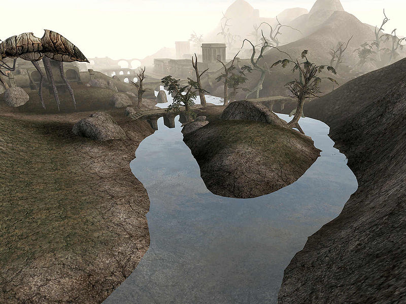
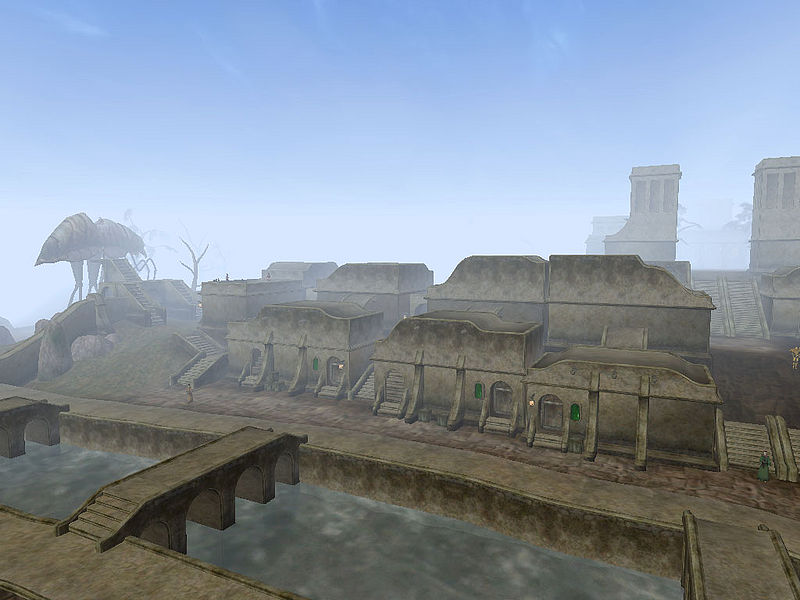
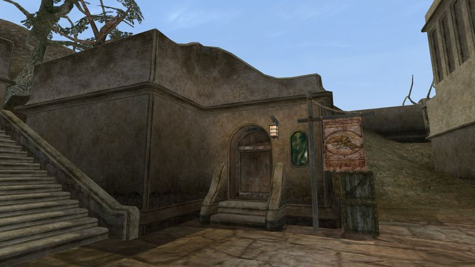
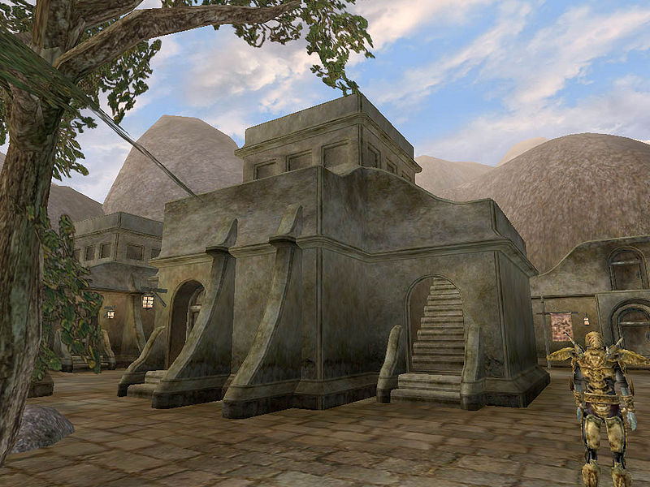

Morrowind:Balmora
Morrowind: Places
| Balmora |
| Alignment: Hlaalu |
| Region: West Gash |
|
Transport:
Almsivi Intervention:
Divine Intervention:
Guild Guide:
Silt Strider:
|
Services:
|
 |
|  Balmora viewed from the Odai River |
|  View over Balmora from Labor Town |
|  The South Wall Cornerclub |
|  High Town Manors |
Balmora (Dark Elvish for "Stonewood") is the nominal district seat of House Hlaalu, and the second largest settlement geographically on Vvardenfell after Vivec. Balmora is located at the southernmost edge of the West Gash, right at the point where the region converges with the Ashlands, the marshes of the Bitter Coast and the lush plantations of the Ascadian Isles. The Odai River runs through its heart and divides it into four districts, High Town, the Commercial District, Labor Town, and nearby Moonmoth Legion Fort.
High Town
On the hill to the west of the river lies High Town, with its elaborate Hlaalu manors, a well-stocked alchemist, a fine clothier, and the Morag Tong guildhall in the extreme northwest corner. House Hlaalu services are available at Hlaalu Council Manor. Tribunal Temple faithful seek solace and services at the Balmora Temple in the northwest.
Commercial District
Just west of the river, the Commercial District is centered around a large plaza,
lined by traders and outfitters with a selection of wares. The Silt Strider port is
along the South Wall, across from the Council Club of the Camonna Tong, and the tavern,
Lucky Lockup.
The Fighters Guild and Mages Guild are located next to each other on a narrow street east
from the plaza. There is an armorer offering Dreugh Armor, a smithy, The Razor Hole,
a well-stocked bookstore and the tavern Eight Plates.
Labor Town
Located east of the river, Labor Town has a large amount of modest residences, along with a similarly named road—Labor Street—running through it. The Grand Spymaster of the Blades in Vvardenfell, Caius Cosades, lives in a small, nondescript house in the northeastern corner. Several trainers and merchants, including fellow Blades, live close by. The South Wall Cornerclub, owned by Bacola Closcius, is the local hideout of the Thieves Guild with its services.
Moonmoth Legion Fort
Leave Balmora through the South Gate and east over a small bridge, along well-marked roads to reach Moonmoth Legion Fort. The fort houses the Imperial Legion garrison and an Imperial Cult altar.
People
None of the Hlaalu councilors live in Balmora.
Nileno Dorvayn at the Hlaalu Council Manor is the local ranking Hlaalu.
Caius Cosades, Grand Spymaster of the Blades, lives in the northeastern corner of Labor Town.
At the Guild of Fighters, Eydis Fire-Eye is the steward.
Ranis Athrys is the Mages Guild steward. Ethasi Rilvayn is the Morag Tong steward.
Feldrelo Sadri is the ranking cleric of the Balmora Tribunal Temple.
The colorful Sugar-Lips Habasi, a freelance facilitator of no fixed address,
is the local boss of the Thieves Guild at the South Wall Cornerclub.
Larrius Varro is the Legion Champion and commander of the troops at Fort Moonmoth.
Two Master Trainers reside in Balmora, Todwendy - Short Blade, and Hecerinde - Security.
Getting There and Around
Silt Strider service goes to Ald'ruhn, Suran, Vivec, and Seyda Neen. The Guild Guide at the Guild of Mages can teleport you to Ald'ruhn, Vivec, Caldera, and Sadrith Mora for a fee.
A good road leads south to Pelagiad, Seyda Neen, Ebonheart, and Vivec. A rugged wilderness track leads southwest along the Odai River to the fishing village of Hla Oad on the Bitter Coast. Improved roads head north to Caldera and Ald'ruhn. An unimproved trail leads northeast up the ravines of Foyada Mamaea to the Ghostgate; the path is easy to follow, but dangerous beasts threaten pilgrims who travel this route to the Ghostgate shrine.